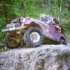
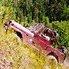
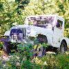

|  |
Iceman The first major obstacle was optional and about half the people skipped it, but after that we started hitting obstacles that weren't optional. The Iceman struck fast freezing us in our tracks. |
|  |
Old Miner After Carbonate, we dropped into Chism Gulch and stopped for lunch at the base of Heckman Hill, aka Widowmaker Hill. Heckman Hill is the most challenging part of the Old Miner and it requires lots of throttle no matter what modifications you may have made to your vehicle. |
|  |
Mount Moriah Mount Moriah starts out with a rocky and muddy hill climb and continues on with some wicked off-camber sections. The hill climb isn't too tough, but the off-camber sections require careful driving. After the off-camber secion, I was heading down a steep decent when smoke started pouring out of my dash. |